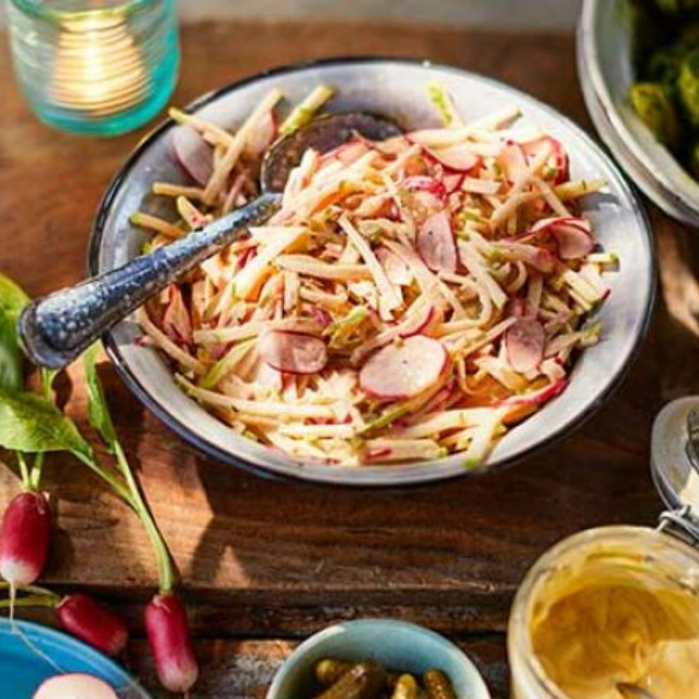

Recipe
Recipe Finder
Create tasty meals from the ingredients you already have
Make the most of those stored cupboard staples for any mealtime. Our easy recipes will help guide you through how to make a delicious meal in no time.
Find a wide variety of amazing recipes!

Fruit Recipes
Carb recipes
Protein recipes
Vegetable recipes
❮
❯